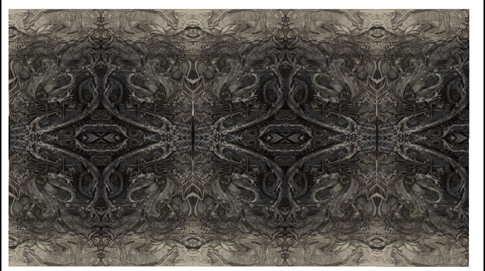

Underwater mixed-media drawing · Shell and discovery
Oysters and Pearl

Oysters and Pearl draws on the relationship between a protective shell and the pearl it contains. Marine imagery becomes a visual language for concealment, discovery and the value of what is not immediately visible.
In Kimberly Nichole Reising’s underwater works, shifts in atmosphere and visual depth allow forms to appear, disappear and return to view. That way of looking creates space for the viewer’s own discoveries.
The artwork belongs to KNR Studio’s exploration of organic structures, perceptual layering and the movement between a recognizable subject and a wider visual environment.
Oysters and Pearl
$500 — 22×30"
View secure Stripe checkout
Purchase details and available options are confirmed at checkout.